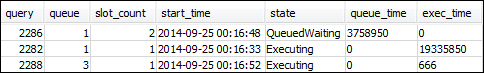
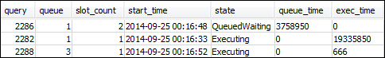

Terjemahan disediakan oleh mesin penerjemah. Jika konten terjemahan yang diberikan bertentangan dengan versi bahasa Inggris aslinya, utamakan versi bahasa Inggris.
Bagian 4: Menggunakan wlm_query_slot_count untuk sementara mengesampingkan tingkat konkurensi dalam antrian
Terkadang, pengguna mungkin memerlukan lebih banyak sumber daya untuk kueri tertentu untuk sementara waktu. Jika demikian, mereka dapat menggunakan pengaturan konfigurasi wlm_query_slot_count untuk sementara mengesampingkan cara slot dialokasikan dalam antrian kueri. Slot adalah unit memori dan CPU yang digunakan untuk memproses kueri. Anda mungkin menimpa jumlah slot ketika Anda memiliki pertanyaan sesekali yang mengambil banyak sumber daya di cluster, seperti ketika Anda melakukan operasi VACUUM dalam database.
Anda mungkin menemukan bahwa pengguna sering perlu mengatur wlm_query_slot_count untuk jenis kueri tertentu. Jika demikian, pertimbangkan untuk menyesuaikan konfigurasi WLM dan memberi pengguna antrian yang lebih sesuai dengan kebutuhan kueri mereka. Untuk informasi lebih lanjut tentang sementara mengesampingkan tingkat konkurensi dengan menggunakan jumlah slot, lihatwlm_query_slot_count.
Langkah 1: Ganti tingkat konkurensi menggunakan wlm_query_slot_count
Untuk tujuan tutorial ini, kita menjalankan kueri SELECT yang berjalan lama. Kami menjalankannya sebagaiadminwlm pengguna menggunakan wlm_query_slot_count untuk meningkatkan jumlah slot yang tersedia untuk query.
Untuk menimpa tingkat concurrency menggunakan wlm_query_slot_count
-
Tingkatkan batas kueri untuk memastikan bahwa Anda memiliki cukup waktu untuk menanyakan tampilan WLM_QUERY_STATE_VW dan melihat hasilnya.
set wlm_query_slot_count to 3; select avg(l.priceperticket*s.qtysold) from listing l, sales s where l.listid <40000; -
Sekarang, kueri WLM_QUERY_STATE_VW dengan pengguna admin untuk melihat bagaimana kueri berjalan.
select * from wlm_query_state_vw;Berikut ini adalah contoh hasil.

Perhatikan bahwa jumlah slot untuk query adalah 3. Hitungan ini berarti bahwa query menggunakan ketiga slot untuk memproses query, mengalokasikan semua sumber daya dalam antrian untuk query itu.
-
Sekarang, jalankan kueri berikut.
select * from WLM_QUEUE_STATE_VW;Berikut ini adalah contoh hasil.

Pengaturan konfigurasi wlm_query_slot_count berlaku untuk sesi saat ini saja. Jika sesi tersebut berakhir, atau pengguna lain menjalankan kueri, konfigurasi WLM akan digunakan.
-
Setel ulang jumlah slot dan jalankan kembali tes.
reset wlm_query_slot_count; select avg(l.priceperticket*s.qtysold) from listing l, sales s where l.listid <40000;Berikut ini adalah contoh hasil.


Langkah 2: Jalankan kueri dari sesi yang berbeda
Selanjutnya, jalankan kueri dari sesi yang berbeda.
Untuk menjalankan kueri dari sesi yang berbeda
-
Di jendela RSQL 1 dan 2, jalankan berikut ini untuk menggunakan grup kueri pengujian.
set query_group to test; -
Di jendela RSQL 1, jalankan kueri lama berjalan berikut.
select avg(l.priceperticket*s.qtysold) from listing l, sales s where l.listid <40000; -
Sebagai permintaan lama berjalan masih akan di jendela RSQL 1, jalankan berikut ini. Perintah ini meningkatkan jumlah slot untuk menggunakan semua slot untuk antrian dan kemudian mulai menjalankan kueri yang sudah berjalan lama.
set wlm_query_slot_count to 2; select avg(l.priceperticket*s.qtysold) from listing l, sales s where l.listid <40000; -
Buka jendela RSQL ketiga dan kueri tampilan untuk melihat hasilnya.
select * from wlm_queue_state_vw; select * from wlm_query_state_vw;Berikut ini adalah contoh hasil.
 
Perhatikan bahwa query pertama menggunakan salah satu slot dialokasikan untuk antrian 1 untuk menjalankan query. Selain itu, perhatikan bahwa ada satu kueri yang menunggu dalam antrian (di mana
queuedada1danstateberadaQueuedWaiting). Setelah kueri pertama selesai, yang kedua mulai berjalan. Eksekusi ini terjadi karena kedua kueri dialihkan ke gruptestkueri, dan kueri kedua harus menunggu slot yang cukup untuk mulai diproses.